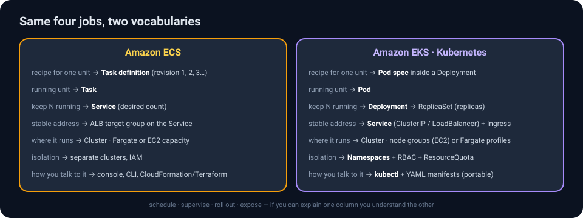
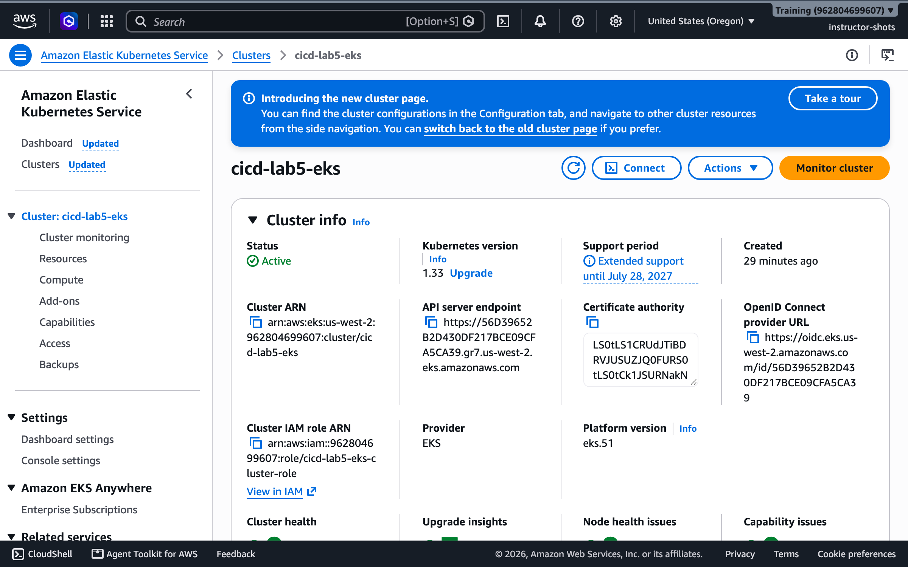
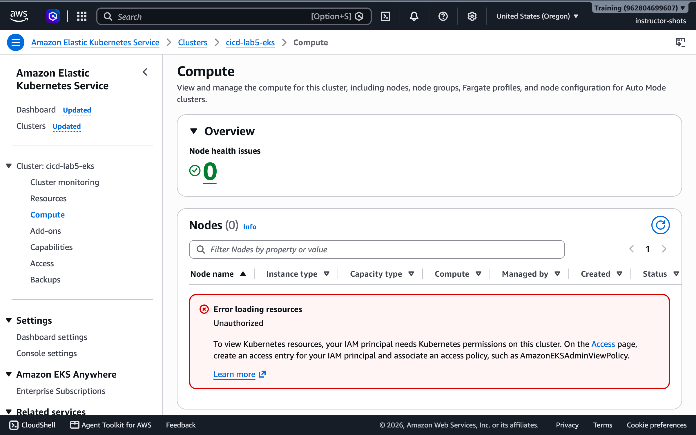
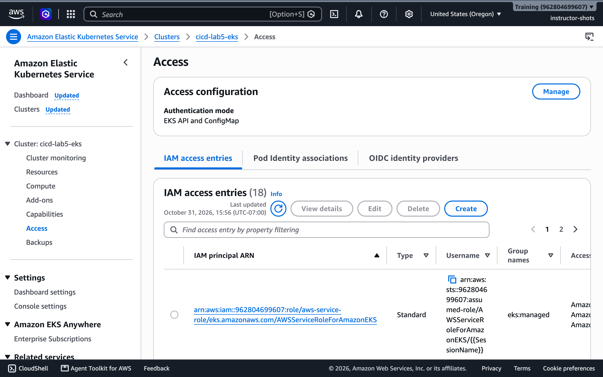
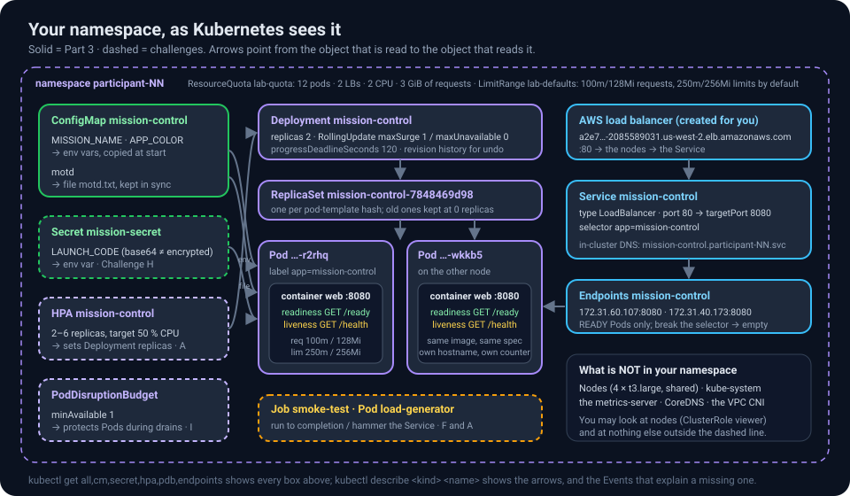
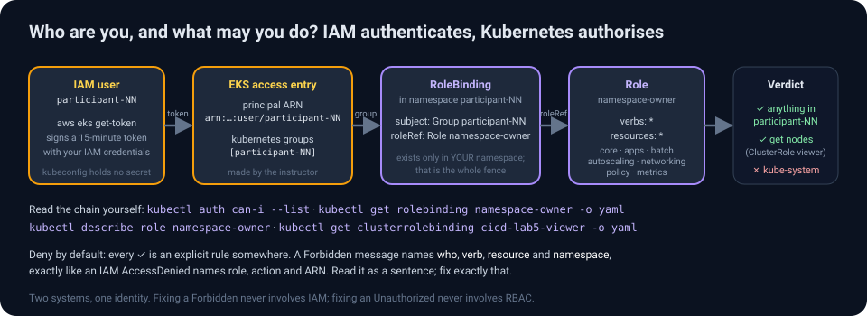
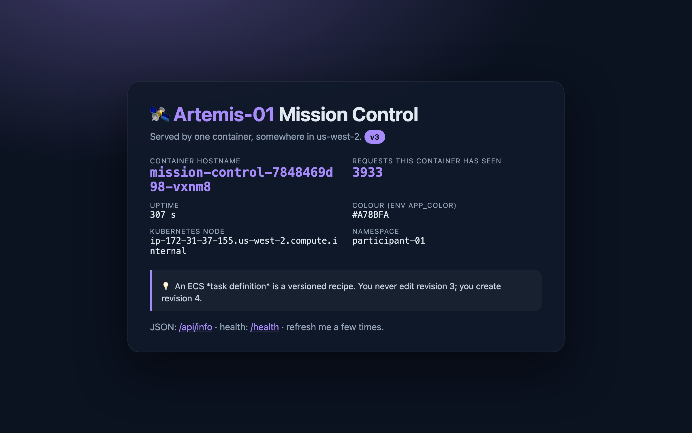
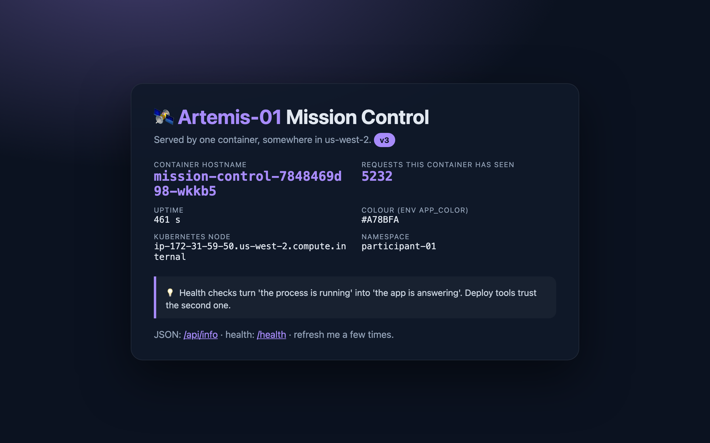
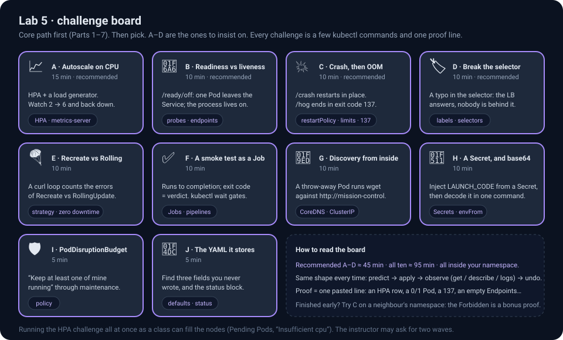
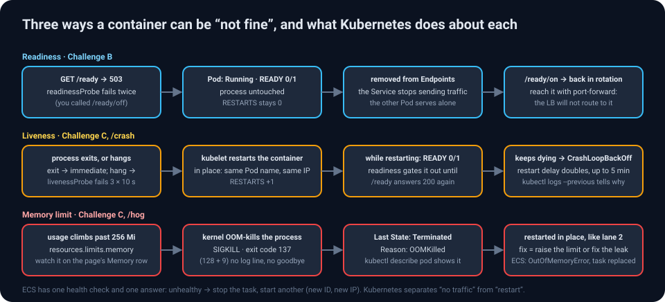

On this page
- Part 0 · The idea in five minutes
- Part 1 · Open CloudShell and connect kubectl
- Part 2 · RBAC says no (on purpose)
- Part 3 · Deploy Mission Control
- Part 4 · Scale, and meet the quota
- Part 5 · Rolling update, with proof
- Part 6 · Inside a Pod: self-healing, logs, exec, port-forward
- Part 7 · Configuration at run time
- Part 8 · Challenges
- Part 9 · Clean up (your namespace only)
- Part 10 · What you learned
Your namespace is your sandbox. The cluster cicd-lab5-eks is shared by everyone. Each of you has a namespace named after your user (participant-NN) with full rights inside it and none outside it. Every command below runs in your namespace; if you forget to set it, Kubernetes will politely refuse (you will see this on purpose in Part 2).
Region: us-west-2, as always. Proofs: every challenge ends with one line to paste into the class chat.
Part 0 · The idea in five minutes
Kubernetes in one paragraph
Kubernetes is a control loop. You hand it a desired state written in YAML ("two copies of this image, exposed on port 80, each allowed 256 MiB") and a set of controllers works continuously to make reality match: scheduling Pods onto nodes, restarting them when they die, adding replicas when you ask, swapping versions one Pod at a time, keeping a mounted file in sync with the ConfigMap it came from. You never tell it how; you tell it what, and you watch it converge. Everything you did by clicking in Lab 4 you do here with kubectl apply -f file.yaml.

The translation table (keep it open)
| You did this in Lab 4 (ECS) | Today it is called | Defined in |
|---|---|---|
| Task definition | Pod spec (the template: inside a Deployment) |
01-deployment.yaml |
| Task | Pod | created for you by the Deployment |
| Service with desired count 2 | Deployment with replicas: 2 (it manages a ReplicaSet) |
01-deployment.yaml |
| Min running % / max running % (the blast-radius dial) | strategy.rollingUpdate.maxUnavailable / maxSurge |
01-deployment.yaml |
| Service + ALB target group | Service of type: LoadBalancer (+ its Endpoints) |
02-service.yaml |
| Container health check (one check, one answer: replace) | readinessProbe (gates traffic) and livenessProbe (triggers a restart in place) | 01-deployment.yaml |
| Environment variables in the task definition | ConfigMap → env vars, or → a mounted file that stays in sync | 00-configmap.yaml |
ValueFrom secrets, execution role |
Secret → env var (Challenge H) | kubectl create secret |
| Rolling update, circuit breaker, "Update service" | kubectl set image, kubectl rollout status / history / undo, progressDeadlineSeconds |
commands |
ecs execute-command |
kubectl exec, kubectl port-forward, kubectl logs |
commands |
| Service Auto Scaling | HorizontalPodAutoscaler | 03-hpa.yaml |
ecs run-task (one-off) |
Job (run to completion), CronJob | 05-smoke-test.yaml |
| Cluster per team, IAM | Namespace per student + RBAC + ResourceQuota + LimitRange | made by the instructor |
| Fargate | EC2 nodes in a managed node group (two t3.large), shared by the class |
made by the instructor |
What the instructor built for you

- One EKS cluster, Kubernetes 1.33, two worker nodes, the usual add-ons (networking, DNS, metrics).
- An access entry that maps your IAM user to a Kubernetes group named
participant-NN. - A namespace
participant-NN, a Role granting that group everything inside it, a ClusterRole allowing read-onlyget nodes, a ResourceQuota (max 12 pods, 2 load balancers, 2 CPU / 3 GiB requested) and a LimitRange (default requests/limits for containers that forget to set them).


By the end of Part 3 your namespace will contain the solid boxes on this map; the challenges add the dashed ones. Come back to it whenever a name is unfamiliar.

Part 1 · Open CloudShell and connect kubectl
- In the console's top bar click the CloudShell icon (the
>_terminal icon, or the CloudShell link in the bottom-left). A Linux shell opens in your browser, already signed in as you (participant-NN), with the AWS CLI andkubectlpre-installed. First start takes about a minute. - Point
kubectlat the class cluster and make your namespace the default:
aws eks update-kubeconfig --region us-west-2 --name cicd-lab5-eks
kubectl config set-context --current --namespace participant-NN # ← your number
kubectl version --client
kubectl get nodes
Expected output
Client Version: v1.36.2-eks-8f14419
Added new context arn:aws:eks:us-west-2:962804699607:cluster/cicd-lab5-eks to /home/cloudshell-user/.kube/config
NAME STATUS ROLES AGE VERSION
ip-172-31-37-155.us-west-2.compute.internal Ready <none> 22m v1.33.13-eks-6e7947a
ip-172-31-59-50.us-west-2.compute.internal Ready <none> 22m v1.33.13-eks-6e7947a
Two nodes, both Ready. That get nodes worked because of the read-only ClusterRole; it is the only cluster-wide thing you may see.
If instead you get error: You must be logged in to the server (the server has asked for the client to provide credentials), your IAM identity has no access entry on the cluster: check that CloudShell shows your own user (aws sts get-caller-identity) and ask the instructor to confirm the cluster module has been applied for your number.
✅ Checkpoint —
kubectl config view --minify | grep namespaceprintsnamespace: participant-NN.
1b · Read your guard rails
Before you build, look at the fence you are standing in. Everything below is data you are allowed to read:
kubectl auth can-i --list | head -12 # what may I do here?
kubectl auth can-i list pods -n kube-system # "no"
kubectl auth can-i delete deployments # "yes" (in your namespace)
kubectl describe quota lab-quota # how much may I use?
kubectl describe limitrange lab-defaults # what do containers get when they forget to ask?
kubectl get rolebinding namespace-owner -o yaml # the exact rule that lets you in

🔍 How did kubectl know who I am? (identity, briefly)
update-kubeconfig wrote a kubeconfig whose credential plugin runs aws eks get-token. Every kubectl call presents a short-lived token signed by your IAM credentials; EKS maps your IAM user ARN (via the access entry) to the Kubernetes group participant-NN; a RoleBinding in your namespace binds that group to a Role whose rules say verbs: * on resources: * for the API groups you need. IAM authenticates, Kubernetes authorises. No kubeconfig secrets, nothing to rotate. The can-i --list output is the Role, rendered.
Part 2 · RBAC says no (on purpose)
Before you build anything, test the fence:
kubectl get pods -n participant-02 # or any neighbour that is not you
kubectl get pods -n kube-system
kubectl get pods # your own namespace: empty, but allowed
What you see, and why
Error from server (Forbidden): pods is forbidden: User "participant-01" cannot list resource "pods" in API group "" in the namespace "participant-02"
Error from server (Forbidden): pods is forbidden: User "participant-01" cannot list resource "pods" in API group "" in the namespace "kube-system"
No resources found in participant-01 namespace.
Read the first message like the IAM errors of Lab 3 and Lab 4: who (User "participant-01"), verb (list), resource (pods), where (namespace "participant-02"). A RoleBinding exists only in your namespace, so every other namespace is a wall. This is multi-tenancy with one cluster and fifteen tenants.
Part 3 · Deploy Mission Control
Download lab5-eks/lab5-manifests.zip (or the folder lab5-eks/manifests/) and upload the YAML files to CloudShell (Actions → Upload file, then unzip lab5-manifests.zip), or create them with nano. Then edit 01-deployment.yaml:
- replace
IMAGEwith your Lab 4 image URI, e.g.962804699607.dkr.ecr.us-west-2.amazonaws.com/participant-NN-mission-control:v3(if you deleted it already, use the shared…/participant-01-mission-control:v3);
and in 00-configmap.yaml replace Artemis-NN and the participant-NN in the message with your number.
Three files, three kinds of object. The ConfigMap holds configuration, outside the image:
apiVersion: v1
kind: ConfigMap
metadata: { name: mission-control }
data:
MISSION_NAME: "Artemis-NN" # → env vars, copied into the container when it STARTS
APP_COLOR: "#A78BFA"
motd: | # → a file, kept in sync while the Pod RUNS (Part 7)
Welcome aboard, participant-NN. This text comes from a ConfigMap mounted as a file.
The Deployment, annotated:
apiVersion: apps/v1
kind: Deployment
metadata: { name: mission-control, labels: { app: mission-control } }
spec:
replicas: 2 # desired count (ECS: desired tasks)
selector: { matchLabels: { app: mission-control } }
strategy:
type: RollingUpdate
rollingUpdate: { maxSurge: 1, maxUnavailable: 0 } # the dial: never below 2 ready, at most 3 (ECS: min 100 % / max 150 %)
progressDeadlineSeconds: 120 # a rollout stuck for 2 minutes is reported as failed
template: # the Pod spec (ECS: task definition)
metadata: { labels: { app: mission-control } }
spec:
containers:
- name: web
image: IMAGE # ← your ECR URI with a vN tag
ports: [{ containerPort: 8080 }]
envFrom:
- configMapRef: { name: mission-control } # MISSION_NAME and APP_COLOR become env vars
env:
- { name: MOTD_FILE, value: /etc/mission/motd.txt }
- name: POD_NAME # the Downward API: facts about this Pod, as env vars
valueFrom: { fieldRef: { fieldPath: metadata.name } }
- name: NODE_NAME # the page shows which node served you
valueFrom: { fieldRef: { fieldPath: spec.nodeName } }
- name: POD_NAMESPACE
valueFrom: { fieldRef: { fieldPath: metadata.namespace } }
volumeMounts: [{ name: motd, mountPath: /etc/mission, readOnly: true }]
resources:
requests: { cpu: 100m, memory: 128Mi } # what the scheduler reserves (counts against your quota)
limits: { cpu: 250m, memory: 256Mi } # the ceiling; exceeding memory = OOMKilled, exit code 137
readinessProbe: # gates traffic
httpGet: { path: /ready, port: 8080 }
initialDelaySeconds: 3
periodSeconds: 5
failureThreshold: 2
livenessProbe: # triggers a restart
httpGet: { path: /health, port: 8080 }
initialDelaySeconds: 10
periodSeconds: 10
volumes:
- name: motd
configMap: { name: mission-control, items: [{ key: motd, path: motd.txt }] }
Two probes, two different endpoints, two different jobs. Lab 4's single health check hit /health; here /health means "alive" and /ready means "send me traffic". Challenge B makes the difference visible.
The Service:
apiVersion: v1
kind: Service
metadata: { name: mission-control }
spec:
type: LoadBalancer # ask AWS for a load balancer (ECS: ALB + target group)
selector: { app: mission-control } # send traffic to Pods with this label; nothing else connects the two
ports: [{ port: 80, targetPort: 8080 }]
Apply all three and watch:
kubectl apply -f 00-configmap.yaml -f 01-deployment.yaml -f 02-service.yaml
kubectl annotate deployment/mission-control kubernetes.io/change-cause="first deploy, image v3"
kubectl rollout status deployment/mission-control
kubectl get pods -o wide
kubectl get endpoints mission-control
kubectl get svc mission-control
Expected output
configmap/mission-control created
deployment.apps/mission-control created
service/mission-control created
deployment.apps/mission-control annotated
Waiting for deployment "mission-control" rollout to finish: 0 of 2 updated replicas are available...
deployment "mission-control" successfully rolled out
NAME READY STATUS RESTARTS AGE IP NODE
mission-control-78fcfc8d89-tc7jc 1/1 Running 0 12s 172.31.60.107 ip-172-31-59-50.us-west-2.compute.internal
mission-control-78fcfc8d89-tjh42 1/1 Running 0 12s 172.31.40.173 ip-172-31-37-155.us-west-2.compute.internal
NAME ENDPOINTS AGE
mission-control 172.31.40.173:8080,172.31.60.107:8080 12s
NAME TYPE CLUSTER-IP EXTERNAL-IP PORT(S)
mission-control LoadBalancer 10.100.12.34 a2e73277…-2085589031.us-west-2.elb.amazonaws.com 80:31234/TCP
Two Pods on two different nodes (the scheduler spreads them). READY 1/1 means the readiness probe passed. Endpoints is the list the Service actually sends traffic to: the two Pod IPs, there because their label matches the selector and they are ready. The Service's EXTERNAL-IP is a load balancer hostname; AWS takes a minute or two to create it and register the nodes. (kubectl may warn that Endpoints is deprecated in favour of EndpointSlice; both show the same thing.)
Open http://<EXTERNAL-IP hostname>/ in your browser (it may answer 503 for the first minute). Refresh several times.


The hostname is now a Pod name and it alternates between your two Pods; the Kubernetes node field shows which EC2 node each runs on; the namespace field says participant-NN; the Memory row says … of 256 MiB limit and CPU limit 0.25 vCPU, straight from your resources:; and the green message of the day panel is the ConfigMap, mounted as a file. Same image as Lab 4, different orchestrator.
✅ Checkpoint —
kubectl get deploy,rs,pods,svc,cm,endpointsshows 1 Deployment (2/2), 1 ReplicaSet, 2 Pods, 1 Service with an external hostname, 1 ConfigMap, 2 endpoints. (The EKS console's Resources tab can show the same objects filtered to your namespace, butkubectlis the tool of this lab.)
Part 4 · Scale, and meet the quota
kubectl scale deployment/mission-control --replicas=4
kubectl get pods # four, within seconds
kubectl scale deployment/mission-control --replicas=20
kubectl get deployment mission-control
kubectl get events --field-selector reason=FailedCreate | tail -3
Expected output
NAME READY UP-TO-DATE AVAILABLE AGE
mission-control 12/20 12 12 118s
… Error creating: pods "mission-control-78fcfc8d89-dl7rc" is forbidden: exceeded quota: lab-quota, requested: pods=1, used: pods=12, limited: pods=12
Twelve Pods started; the thirteenth was refused by the ResourceQuota. The Deployment keeps trying (that is the control loop), and keeps being told no. Nothing else in the cluster was affected: your blast radius is your namespace. kubectl describe quota lab-quota now shows pods 12/12 and requests.cpu 1200m/2.
Scale back down, then look at the cluster's side of the same story:
kubectl scale deployment/mission-control --replicas=2
kubectl describe node | grep -A7 "Allocated resources" # both nodes: what is reserved, in total, by everyone
kubectl top pods # live usage (the metrics-server add-on)
Requests are promises, limits are walls. The scheduler places a Pod only on a node with enough unreserved CPU/memory for its requests; the node's Allocated resources is the sum of everyone's requests, and it can reach 100 % while actual usage (kubectl top) stays at 5 %. Quotas count requests, not usage. limits are enforced by the kernel at run time: CPU is throttled, memory is killed (Challenge C). A Pod with no requests gets the LimitRange defaults, which is why "forgot to set resources" still counts against you.
Part 5 · Rolling update, with proof
Lab 4 told you the rolling update had no downtime. This time, measure it.
5a · A witness
Open a second CloudShell tab (the + next to the tab name, or Actions → New tab) and leave this loop running; it prints one status code per request:
LB=$(kubectl -n participant-NN get svc mission-control -o jsonpath='{.status.loadBalancer.ingress[0].hostname}')
while true; do curl -s -o /dev/null -m 2 -w '%{http_code} ' http://$LB/; sleep 0.3; done
A healthy service prints 200 200 200 …. Anything else during the next steps is a user who saw an error.
5b · Ship v4 (or any other tag you have)
Back in the first tab:
kubectl set image deployment/mission-control web=962804699607.dkr.ecr.us-west-2.amazonaws.com/participant-NN-mission-control:v4
kubectl annotate deployment/mission-control kubernetes.io/change-cause="ship v4"
kubectl rollout status deployment/mission-control
kubectl rollout history deployment/mission-control
kubectl get rs
Expected output
Waiting for deployment "mission-control" rollout to finish: 1 out of 2 new replicas have been updated...
Waiting for deployment "mission-control" rollout to finish: 1 old replicas are pending termination...
deployment "mission-control" successfully rolled out
REVISION CHANGE-CAUSE
1 first deploy, image v3
2 ship v4
NAME DESIRED CURRENT READY AGE
mission-control-78fcfc8d89 0 0 0 14m ← the old ReplicaSet, kept at 0: your rollback target
mission-control-7848469d98 2 2 2 40s
Exactly Lab 4's rolling update with the dial at maxSurge 1 / maxUnavailable 0: a new ReplicaSet is created, one new Pod comes up and passes readiness, one old Pod is terminated, repeat. The witness tab printed nothing but 200. Refresh the page: badge v4. The change-cause annotations turn rollout history from a list of numbers into a changelog; make it a habit.
🔧 Troubleshooting exercise 1 — a Pod that will never start
kubectl set image deployment/mission-control web=962804699607.dkr.ecr.us-west-2.amazonaws.com/participant-NN-mission-control:v99
kubectl annotate deployment/mission-control kubernetes.io/change-cause="ship v99"
sleep 30; kubectl get pods
💡 Hint 1 — what is the Pod's STATUS?
NAME READY STATUS RESTARTS AGE
mission-control-7559565db7-w8bj8 0/1 ImagePullBackOff 0 41s
mission-control-7848469d98-r2rhq 1/1 Running 0 58s
mission-control-7848469d98-wkkb5 1/1 Running 0 51s
ImagePullBackOff: the kubelet tried to pull the image, failed, and is backing off between retries. Note the two old Pods are still Running and serving, and the witness tab is still all 200. The rollout is stuck, not broken.
💡 Hint 2 — ask the Pod what happened
kubectl describe pod -l app=mission-control | grep -A3 Events | tail -5
The Events section says Failed to pull image "…:v99": … not found. The same diagnosis as Lab 4's CannotPullContainerError, with the same three suspects (tag, permissions, network). Here the tag is the culprit.
✅ Solution — the deadline, then roll back
Wait for the deadline you set in the manifest, and watch Kubernetes report it:
kubectl rollout status deployment/mission-control # blocks, then after 120 s:
# error: deployment "mission-control" exceeded its progress deadline
kubectl get deployment mission-control -o jsonpath='{range .status.conditions[*]}{.type}={.status} ({.reason}){"\n"}{end}'
# Available=True (MinimumReplicasAvailable)
# Progressing=False (ProgressDeadlineExceeded)
kubectl rollout undo deployment/mission-control
kubectl rollout status deployment/mission-control
kubectl rollout history deployment/mission-control
rollout undo re-activates the previous ReplicaSet (history now shows revision 4 = a copy of revision 2, "ship v4"). Because the broken Pod never became ready, the Deployment never scaled the old ReplicaSet down: zero user impact, exactly as ECS's circuit breaker behaved in Lab 4.
The difference: Kubernetes does not roll back by itself. progressDeadlineSeconds makes the Deployment say it failed (Progressing=False), and rollout status exits non-zero at that moment; a human, or a pipeline step that runs kubectl rollout status || kubectl rollout undo, decides. Without the deadline (default 600 s) the stuck rollout would sit there, green on the outside, for ten minutes.
Proof: the exceeded its progress deadline line and the Progressing=False (ProgressDeadlineExceeded) condition.
🔧 Troubleshooting exercise 2 — running, but never ready
A different failure, with a different signature. Edit 01-deployment.yaml and change the readiness probe's path from /ready to /readyz (a plausible typo: several real apps use that path). Apply it.
kubectl apply -f 01-deployment.yaml
sleep 25; kubectl get pods
💡 Hint 1 — read the columns
NAME READY STATUS RESTARTS AGE
mission-control-6d5c7f9b4-x2k9p 0/1 Running 0 25s
mission-control-7848469d98-r2rhq 1/1 Running 0 6m
mission-control-7848469d98-wkkb5 1/1 Running 0 6m
STATUS says Running: the image pulled, the process started, /health answers, so liveness is happy and RESTARTS stays 0. READY says 0/1: the readiness probe has never passed. A Pod can be perfectly alive and still not be allowed to serve. kubectl get endpoints mission-control lists only the two old Pods.
💡 Hint 2 — the probe's own words
kubectl describe pod -l app=mission-control | grep "Readiness probe failed" | tail -1
# Warning Unhealthy … kubelet Readiness probe failed: HTTP probe failed with statuscode: 404
404, not 503, not a timeout: the app answered and said "no such page". The app is fine; the probe is wrong. (503 would mean the app itself said "not ready"; a timeout would mean the port or the process.)
✅ Solution
Fix the path back to /ready in the file and kubectl apply -f 01-deployment.yaml (or kubectl rollout undo). The new Pod goes 1/1 within seconds and the rollout completes.
The lesson: kubectl get pods has two columns that look alike and mean different things. STATUS is the kubelet's view of the process; READY is the probe's view of the service. Troubleshooting exercise 1 was "cannot start"; this one is "started, cannot serve". Both left the old Pods serving. The witness tab never printed anything but 200.
Proof: a Pod with 0/1 Running RESTARTS 0 and the statuscode: 404 event.
Stop the witness loop (Ctrl-C in the second tab) when you are done; you will want it again in Challenge E.
Part 6 · Inside a Pod: self-healing, logs, exec, port-forward
6a · Delete one, get one
POD=$(kubectl get pods -l app=mission-control -o jsonpath='{.items[0].metadata.name}')
kubectl delete pod $POD
kubectl get pods
Expected output
pod "mission-control-7848469d98-r2rhq" deleted
NAME READY STATUS RESTARTS AGE
mission-control-7848469d98-nx24b 1/1 Running 0 4s ← brand new
mission-control-7848469d98-wkkb5 1/1 Running 0 8m
You deleted a Pod; the ReplicaSet noticed 1 < 2 and created another within seconds, with a new name and a new IP. Lab 4's Exercise C, with a different verb.
6b · Logs, across Pods
kubectl logs -l app=mission-control --prefix --tail=3
kubectl logs deployment/mission-control --since=2m | grep -v '"probe": true' | tail -5
Every line is JSON (event, path, status, hostname): the same lines CloudWatch received in Lab 4. --prefix tells you which Pod said what; -l selects by label rather than by name, so the command keeps working after Pods are replaced. The probe: true lines are the kubelet's readiness and liveness probes, arriving from the node's IP every 5 and 10 seconds.
6c · A shell inside
POD=$(kubectl get pods -l app=mission-control -o jsonpath='{.items[0].metadata.name}')
kubectl exec -it $POD -- bash
You are inside the container, as user mission. Look around, then leave:
hostname; id # the Pod name; uid 999, not root
env | grep -E '^(APP_|MISSION|MOTD|POD_|NODE_)' | sort # ConfigMap values and the Downward API, as env vars
cat /etc/mission/motd.txt # the ConfigMap key, as a file
curl -s localhost:8080/ready; echo # the probe, as the kubelet sees it
cat /sys/fs/cgroup/memory.max 2>/dev/null || cat /sys/fs/cgroup/memory/memory.limit_in_bytes # 268435456 = 256 MiB: your limit, in the kernel
echo "I was here" > /tmp/note.txt; ls -l /tmp
exit
Now delete that Pod (6a) and kubectl exec into its replacement: /tmp/note.txt is gone. A Pod's filesystem lives exactly as long as the Pod, as in Lab 4's Challenge K. Anything that must survive goes into a volume: a PersistentVolumeClaim, an S3 bucket, a database.
6d · Reach a Pod the load balancer will not show you
port-forward opens a private tunnel from CloudShell to one Pod, bypassing the Service entirely:
kubectl port-forward pod/$POD 8080:8080 & # background; note the PID it prints
curl -s localhost:8080/api/info | python3 -m json.tool | head -12
kill %1 # close the tunnel
That is how you talk to a specific Pod, or to one that readiness has pulled out of the Service (Challenge B), or to a Deployment that has no Service at all. The ECS equivalent was Challenge K; here no role or agent is needed because kubectl itself is the tunnel.
Part 7 · Configuration at run time
Lab 4 ended with three speeds of change: code, configuration, run-time value. Kubernetes has a fourth: a file that updates inside a running container.
- Edit the ConfigMap:
kubectl edit configmap mission-controlopens it invi; change themotdtext andMISSION_NAME(toArtemis-EDITED), save, quit. (Or, without an editor:kubectl patch configmap mission-control --type merge -p '{"data":{"motd":"Edited at run time, no restart.\n","MISSION_NAME":"Artemis-EDITED"}}'.) - Refresh the page once a minute. Within about a minute the message of the day changes. The mission name in the title does not.
kubectl get pods: same Pods, RESTARTS 0, AGE unchanged. Nothing restarted.
Why one changed and the other did not
The kubelet re-syncs mounted ConfigMap volumes periodically (roughly every minute); the app reads the file on every request, so the new text appears without anyone restarting anything. Environment variables are different: they were copied into the process when it started and a running process cannot be given new ones. To pick up the new MISSION_NAME you must restart the Pods:
kubectl rollout restart deployment/mission-control # a rolling restart with the same image
kubectl rollout status deployment/mission-control
Now the title changes too, and kubectl get pods shows brand-new Pods. Same dial as Part 5: new Pods came up before old ones went, and the witness would have printed only 200.
| You changed… | Kubernetes needs… | Took | ECS equivalent |
|---|---|---|---|
| the image | set image → rolling update |
~1 min | rebuild + revision + rollout |
| an env var (ConfigMap or manifest) | rollout restart → rolling update |
~30 s | new revision + rollout |
| a mounted ConfigMap file | nothing | ≤ 1 min | a Parameter Store value read at run time |
The lesson: mount configuration that may change while the app runs (feature flags, a maintenance banner, a list of upstreams) and put the things that must not change silently (ports, image tags, the database host) in env vars or the manifest, where a change leaves a revision in rollout history.
✅ Checkpoint — The page shows your edited message and the edited mission name;
kubectl rollout historyshows one more revision than before Part 7.
Part 8 · Challenges

| Badge | What it teaches | Time | |
|---|---|---|---|
| A · Autoscale on CPU | 📈 | HorizontalPodAutoscaler, metrics-server | 15 min · recommended |
| B · Readiness vs liveness, live | 🚦 | the two probes, Endpoints | 10 min · recommended |
| C · Crash, then run out of memory | 💥 | restarts in place, OOMKilled, exit code 137 |
10 min · recommended |
| D · Break the selector | 🏷️ | labels are the only glue | 10 min · recommended |
| E · Recreate vs RollingUpdate, measured | 🪂 | strategies, zero downtime as a number | 10 min |
| F · A smoke test as a Job | ✅ | run-to-completion workloads, kubectl wait |
10 min |
| G · Service discovery from inside | 🧭 | ClusterIP and DNS | 10 min |
| H · A Secret, and why base64 is not encryption | 🔑 | Secrets, envFrom |
10 min |
| I · PodDisruptionBudget | 🛡️ | voluntary disruptions | 5 min |
| J · Read the YAML Kubernetes actually stores | 📜 | defaults and status | 5 min |
Challenge A · 📈 Autoscale on CPU
Apply the HorizontalPodAutoscaler and a load generator, then watch:
kubectl apply -f 03-hpa.yaml -f 04-load-generator.yaml
kubectl get hpa mission-control --watch # Ctrl-C to stop
💡 Hint
The HPA targets 50 % average CPU of the Pods' requests (100m). The load generator is a busybox loop hammering the Service from inside the cluster. Metrics arrive every 15–30 s, so give it two minutes. kubectl top pods shows the live numbers it is reacting to.
✅ What you will see
NAME REFERENCE TARGETS MINPODS MAXPODS REPLICAS AGE
mission-control Deployment/mission-control cpu: 1%/50% 2 6 2 22s
mission-control Deployment/mission-control cpu: 209%/50% 2 6 2 42s
mission-control Deployment/mission-control cpu: 122%/50% 2 6 6 63s
mission-control Deployment/mission-control cpu: 104%/50% 2 6 6 2m5s
Utilisation shoots past the target, the HPA scales the Deployment to its maximum of 6 within a minute, and per-Pod utilisation falls. Delete the load generator (kubectl delete pod load-generator) and watch it come back down: the manifest sets scaleDown.stabilizationWindowSeconds: 60 instead of the default 300, so the scale-in happens within a couple of minutes rather than five. kubectl describe hpa mission-control shows the decisions and their reasons as Events.
Note kubectl get deployment: the HPA edits the Deployment's replicas. If you now kubectl apply -f 01-deployment.yaml with replicas: 2, you fight the autoscaler; production manifests leave replicas out when an HPA owns it.
ECS equivalent: Service Auto Scaling with a target-tracking policy on ECSServiceAverageCPUUtilization.
Proof: an HPA row with REPLICAS 6. Delete the HPA afterwards (kubectl delete hpa mission-control) so the other challenges see a steady 2.
Challenge B · 🚦 Readiness vs liveness, live
Mission Control can be told to stop being ready without dying. Do it to one Pod and watch what each probe does.
kubectl get endpoints mission-control # two IPs
LB=$(kubectl get svc mission-control -o jsonpath='{.status.loadBalancer.ingress[0].hostname}')
curl -s http://$LB/ready/off # whichever Pod the LB picks turns NOT READY
sleep 15; kubectl get pods; kubectl get endpoints mission-control
✅ What happens, and how to undo it
NAME READY STATUS RESTARTS AGE
mission-control-7848469d98-nx24b 0/1 Running 0 9m
mission-control-7848469d98-wkkb5 1/1 Running 0 17m
NAME ENDPOINTS AGE
mission-control 172.31.40.173:8080 38m
One Pod is 0/1: its readiness probe (/ready, now 503) failed twice, so the Service removed it from Endpoints. The process is untouched: STATUS Running, RESTARTS 0, and kubectl describe pod shows Readiness probe failed: HTTP probe failed with statuscode: 503. Liveness (/health, still 200) is satisfied, so the kubelet has no reason to restart anything. Refresh the page: every request now lands on the other Pod. Wait a minute: still 0 restarts.
Now bring it back. You cannot reach it through the load balancer (that is the whole point), so tunnel to it directly:
POD=$(kubectl get pods -l app=mission-control -o jsonpath='{.items[?(@.status.containerStatuses[0].ready==false)].metadata.name}')
kubectl port-forward pod/$POD 8080:8080 & sleep 1
curl -s localhost:8080/ready/on; kill %1
sleep 8; kubectl get endpoints mission-control # two IPs again
The lesson: readiness is for "not right now" (warming a cache, draining before shutdown, a dependency being down); liveness is for "stuck". ECS has only the second kind of answer (unhealthy → replace). Kubernetes lets a container step out of rotation and back without losing its state. Note also that /ready/off is reachable by anyone who can reach the page; a real app would protect such a switch.

Proof: a 0/1 Running Pod with RESTARTS 0 and a one-address Endpoints line.
Challenge C · 💥 Crash, then run out of memory
Part 1. Call /crash through the load balancer a few times and watch kubectl get pods.
✅ What happens
The container exits with code 1; the kubelet restarts it in place (same Pod name, same IP, RESTARTS column increments) because a Pod's restart policy defaults to Always. Contrast with Part 6a, where deleting the Pod produced a new Pod. While it restarts, the Pod is 0/1 and out of Endpoints; the other Pod serves. Keep crashing it and the restart delay doubles each time (CrashLoopBackOff, 10 s, 20 s, 40 s… up to 5 min): the kubelet refuses to spin on a container that cannot stay up. kubectl logs $POD --previous shows the log of the container before the last restart; that is where the reason for a crash usually lives.
Part 2. Tunnel to one Pod and ask it to eat memory:
POD=$(kubectl get pods -l app=mission-control -o jsonpath='{.items[0].metadata.name}')
kubectl port-forward pod/$POD 8080:8080 & sleep 1
curl -s -m 60 'localhost:8080/hog?mb=1024'; echo " (curl exit=$?)"; kill %1
sleep 10; kubectl get pod $POD
kubectl describe pod $POD | grep -A4 "Last State"
✅ What happens
(curl exit=52)
NAME READY STATUS RESTARTS AGE
mission-control-7848469d98-nx24b 1/1 Running 1 (12s ago) 14m
Last State: Terminated
Reason: OOMKilled
Exit Code: 137
The app allocated past limits.memory: 256Mi; the kernel killed the process (SIGKILL, 128 + 9 = 137); curl's connection dropped (exit 52, empty reply); the kubelet restarted the container in place and recorded the previous one's fate under Last State. Lab 4's Exercise D, with a restart instead of a replacement. kubectl top pod $POD shortly before the kill would have shown memory at the limit; the page's Memory row shows it live.
The lesson: limits.memory is a wall, not a hint, and 137 is its signature everywhere (Docker, ECS, Kubernetes). When you see OOMKilled in production the answer is a leak fix or a bigger limit, never "restart it again".
Proof: Reason: OOMKilled · Exit Code: 137.
Challenge D · 🏷️ Break the selector
Edit 02-service.yaml and change the selector to app: mission-controll (one extra l). Apply it. Predict: does the load balancer still answer? Do the Pods still run?
💡 Hint
kubectl get endpoints mission-control
kubectl get pods --show-labels
✅ Solution
NAME ENDPOINTS AGE
mission-control <none> 41m
The Pods are fine (2/2 Running), the load balancer still exists, the Service still has a ClusterIP; but its Endpoints are empty, because no Pod carries the label the selector asks for. Users get a connection error or a 503 from the load balancer. Nothing is "down" in any dashboard that looks at Pods or at the LB; only the glue is missing.
Fix the label, apply, and Endpoints fills in within a second or two.
The lesson: in Kubernetes nothing is wired by name. A Service finds Pods by label selector, a Deployment owns Pods by selector, a PDB protects Pods by selector, a NetworkPolicy targets Pods by selector. kubectl get endpoints is the first command to run when "the service is up but nothing answers".
Proof: an ENDPOINTS <none> line.
Challenge E · 🪂 Recreate vs RollingUpdate, measured
Start the witness loop from Part 5a in your second tab. Then change the Deployment's strategy to Recreate and trigger a rollout with a harmless change:
kubectl patch deployment mission-control -p '{"spec":{"strategy":{"type":"Recreate","rollingUpdate":null}}}'
kubectl set env deployment/mission-control DEMO=recreate
kubectl get pods --watch # Ctrl-C when the new Pods are 1/1
✅ What you see, and the way back
Both old Pods go Terminating first; for a few seconds there are zero Pods; then two new ones start and become ready. The witness tab prints a run of 000 or 503 in the middle of its 200s: that is downtime, counted in requests. Recreate is the right tool when two versions must never run at once (a schema migration, a singleton) and the wrong one for anything users are looking at.
Put the dial back and roll once more; the witness prints only 200:
kubectl patch deployment mission-control -p '{"spec":{"strategy":{"type":"RollingUpdate","rollingUpdate":{"maxSurge":1,"maxUnavailable":0}}}}'
kubectl set env deployment/mission-control DEMO-
Try the other corner too: maxSurge: 0, maxUnavailable: 1 is Lab 4's min 50 % / max 100 %: no extra Pod ever, capacity dips to one.
Proof: the witness line with non-200 codes from the Recreate, and an all-200 line from the rolling update.
Challenge F · ✅ A smoke test as a Job
Lab 2's ValidateService hook ran a script on the server after a deployment. Kubernetes has an object for "run this once and tell me the exit code":
kubectl apply -f 05-smoke-test.yaml
kubectl wait --for=condition=complete job/smoke-test --timeout=90s
kubectl logs job/smoke-test
kubectl get job smoke-test
✅ What you see, and how a pipeline uses it
job.batch/smoke-test condition met
1/3 liveness
2/3 readiness
3/3 version
"version":"v4"
smoke test passed
NAME STATUS COMPLETIONS DURATION AGE
smoke-test Complete 1/1 8s 8s
The Job created one Pod that ran three wgets against the Service and exited 0; the Job is Complete. Break it: turn one Pod not-ready as in Challenge B, delete and re-apply the Job (Jobs are immutable), and watch kubectl wait time out with the Job Failed after one retry (backoffLimit: 1), and kubectl logs job/smoke-test end at 2/3 readiness. The Pod disappears by itself ten minutes later (ttlSecondsAfterFinished).
A deploy pipeline is just these lines in order: kubectl apply -f deployment.yaml && kubectl rollout status … && kubectl apply -f smoke-test.yaml && kubectl wait --for=condition=complete job/smoke-test || kubectl rollout undo …. For something that must run on a schedule instead, the same Pod template goes into a CronJob (schedule: "*/5 * * * *").
Proof: a Complete 1/1 Job line, or a Failed one with the log that explains it.
Challenge G · 🧭 Service discovery from inside the cluster
The load generator talked to http://mission-control/ and it worked. Where did that name come from?
kubectl run tmp --restart=Never --image=public.ecr.aws/docker/library/busybox:1.36 -- \
sh -c 'nslookup mission-control; echo ---; wget -qO- http://mission-control/api/info | head -c 200; echo'
kubectl wait --for=jsonpath='{.status.phase}'=Succeeded pod/tmp --timeout=60s
kubectl logs tmp
kubectl get svc mission-control -o jsonpath='{.spec.clusterIP}{"\n"}'
kubectl delete pod tmp
✅ What you see
Server: 10.100.0.10
Address: 10.100.0.10:53
Name: mission-control.participant-NN.svc.cluster.local
Address: 10.100.12.34
---
{"color":"#A78BFA","ecs":{},"hits_on_this_container":3863,"hostname":"mission-control-7848469d98-wkkb5", …
10.100.12.34
A throw-away Pod resolves mission-control to the Service's ClusterIP (a stable virtual IP that exists only inside the cluster; the same number get svc prints) and gets the page from whichever Pod the Service picks. The full name is mission-control.participant-NN.svc.cluster.local; the short form works because the Pod is in the same namespace (busybox's nslookup also prints a few harmless NXDOMAIN lines while it tries the other search suffixes). CoreDNS (one of the add-ons you saw in Part 0) answers; kube-proxy on every node turns the virtual IP into a real Pod IP. Note the shape of the commands: run a Pod, wait for it, read its logs, delete it. That is a Job done by hand (Challenge F).
Every Service has a ClusterIP whether or not it also has a load balancer; type: LoadBalancer is the ClusterIP plus an AWS load balancer pointing at it. Most Services in a real cluster are ClusterIP-only: internal APIs talking to each other by name, with no public address at all. Try kubectl run … -n participant-02: Forbidden, of course.
Proof: the nslookup answer with your Service's ClusterIP.
Challenge H · 🔑 A Secret, and why base64 is not encryption
Mission Control shows a LAUNCH_CODE variable, masked, if it has one. Give it one from a Secret:
kubectl create secret generic mission-secret --from-literal=LAUNCH_CODE=orbit-7f3a-launch-code
kubectl get secret mission-secret -o yaml | grep LAUNCH_CODE
Then add the Secret to the Deployment: in 01-deployment.yaml, under envFrom:, add a second entry - secretRef: { name: mission-secret }, apply, and refresh the page.
✅ What you see, and the uncomfortable part
The page shows Launch code (from a Secret): orbi…••••••••. The rollout happened because the Pod template changed; kubectl rollout history has one more revision.
Now the uncomfortable part:
kubectl get secret mission-secret -o jsonpath='{.data.LAUNCH_CODE}' | base64 -d; echo
That is the value, in clear, for anyone who can get secrets in the namespace. A Secret is base64-encoded so that binary values survive YAML, not encrypted. What protects it is RBAC (who may read Secrets; your Role allows it, a read-only viewer's would not) and, on EKS, envelope encryption of the cluster's datastore with a KMS key, which the instructor enabled or did not. Teams that need more use External Secrets or the Secrets Store CSI driver to pull from Secrets Manager / Parameter Store at run time, which is Lab 4's Challenge J with Kubernetes words.
Proof: the masked code on the page and the decoded value from one command.
Challenge I · 🛡️ PodDisruptionBudget
kubectl apply -f 06-pdb.yaml
kubectl get pdb
✅ What it means
NAME MIN AVAILABLE MAX UNAVAILABLE ALLOWED DISRUPTIONS AGE
mission-control 1 N/A 1 3s
A PDB is a promise you extract from the cluster: "during voluntary disruptions, keep at least one of my Pods". A node drain for a Kubernetes upgrade (EKS managed node group updates do this) evicts Pods one at a time and will wait rather than evict the last one that matches this selector. ALLOWED DISRUPTIONS = 1 because two are ready and one must stay. It does nothing against crashes or OOM kills (that is what replicas and probes are for), and nothing if you set minAvailable: 2 with two replicas except block every drain, which annoys the cluster operator. You cannot drain a node in this class (RBAC), so this one is declarative-only; in production it is the difference between a quiet upgrade and a 2 a.m. page.
Proof: the ALLOWED DISRUPTIONS 1 line.
Challenge J · 📜 Read the YAML Kubernetes actually stores
kubectl get deployment mission-control -o yaml | less
Find three fields you did not write (revisionHistoryLimit, terminationGracePeriodSeconds, dnsPolicy), and the whole status: block with its conditions. Those defaults are the ECS "min 100 % / max 200 %"-style settings and the deployment history you saw in Lab 4, expressed as data. kubectl explain deployment.spec.strategy prints the documentation for any field, offline.
Part 9 · Clean up (your namespace only)
kubectl delete -f 06-pdb.yaml -f 05-smoke-test.yaml -f 04-load-generator.yaml -f 03-hpa.yaml --ignore-not-found
kubectl delete -f 02-service.yaml -f 01-deployment.yaml -f 00-configmap.yaml
kubectl delete secret mission-secret --ignore-not-found
kubectl get all,cm,secret,pdb,hpa,job # only the kube-root-ca.crt ConfigMap should remain
Deleting the Service deletes the AWS load balancer it created (give it a minute). The instructor destroys the cluster and namespaces after class.
Part 10 · What you learned
- Kubernetes is declarative: you apply desired state; controllers converge reality to it, forever, including a file you edited under a running container.
- Deployment → ReplicaSet → Pod is ECS's service → task definition → task with the names changed;
maxSurge/maxUnavailableis the same blast-radius dial. - Readiness gates traffic (Endpoints), liveness restarts in place, limits kill with 137; three different signatures in
kubectl get podsanddescribe. - Labels are the only glue: Services, Deployments, PDBs and HPAs all find their Pods by selector;
kubectl get endpointsis the first question when "up but not answering". rollout status,rollout history(with change-cause),rollout undoandprogressDeadlineSecondsare the whole deployment story;describe,logs,execandport-forwardare the whole debugging story.- A broken image stalls a rollout rather than breaking the service; Kubernetes reports it, a human or a pipeline undoes it.
- ConfigMaps and Secrets separate configuration from the image; mounted files update live, env vars need a restart, and base64 is not encryption.
- Jobs run to completion and make a smoke test a first-class object a pipeline can
waitfor. - Namespaces + RBAC + ResourceQuota + LimitRange turn one cluster into fifteen sandboxes with a known blast radius. IAM authenticates you to EKS; Kubernetes RBAC authorises what you may do.
Quiz yourself
1. A Pod shows 0/1 READY but STATUS Running and RESTARTS 0. What does that mean and what would you check?
The container process is up and liveness is passing, but the readinessProbe is failing, so the Pod receives no Service traffic (it is absent from Endpoints). kubectl describe pod → Events shows the probe failures with a status code: 404 means the probe path is wrong, 503 means the app says it is not ready, a timeout means the port or the process. kubectl logs shows what the app thinks.
2. You scale to 20 and only 12 start. Is the cluster full?
Not necessarily: check kubectl get events first. "exceeded quota" means your namespace's ResourceQuota, not the nodes. A genuinely full cluster shows Pods Pending with Insufficient cpu/memory in their events, and kubectl describe node shows Allocated resources near 100 % of requests, whatever kubectl top says about actual usage.
3. What is the Kubernetes equivalent of ECS's deployment circuit breaker?
There is no automatic rollback by default. A stuck rollout stays stuck (old Pods keep serving) until kubectl rollout undo; progressDeadlineSeconds makes the Deployment report failure (Progressing=False, rollout status exits non-zero), and CI pipelines typically run rollout status || rollout undo.
4. Why could you run `kubectl get nodes` but not `kubectl get pods -n kube-system`?
Your group is bound to a ClusterRole that allows only nodes/namespaces reads cluster-wide, and to a Role with full rights that exists only in your namespace. RBAC is deny-by-default; every allow is explicit. kubectl auth can-i --list shows the result.
5. You edited a ConfigMap. The mounted file changed; the env var did not. Why, and what do you do?
The kubelet re-syncs mounted ConfigMap volumes about once a minute, and the app reads the file per request. Environment variables are copied into a process at start and cannot change afterwards, so kubectl rollout restart deployment/… is needed: a rolling restart with the same image, leaving a revision in the history.
6. A Pod shows RESTARTS 3 and Last State: Terminated, Reason: OOMKilled, Exit Code: 137. What happened three times and what is the fix?
The container exceeded resources.limits.memory and the kernel SIGKILLed it (137 = 128 + 9); the kubelet restarted it in place each time, with a growing back-off. The fix is a leak fix or a higher limit based on kubectl top data, never a bigger restartPolicy. The same number means the same thing on ECS and plain Docker.
7. The load balancer answers but every request fails, Pods are 2/2 Running. First command?
kubectl get endpoints <service>. If it is <none>, the Service's selector matches no Pod labels (Challenge D) or no Pod is ready (Challenge B). Fix the label or the readiness; the LB and the Pods were never the problem.
8. Which Kubernetes objects did a pipeline need to deploy and verify Mission Control, in order?
ConfigMap (configuration), Deployment (apply, then rollout status with a progress deadline), Service (once; it rarely changes), then a Job as the smoke test (apply, wait --for=condition=complete), and rollout undo if either the status or the wait fails. Secrets come from a secret store, not from the repository.
Done. Back to the handout for the wrap-up and the triage playbook you can take with you.